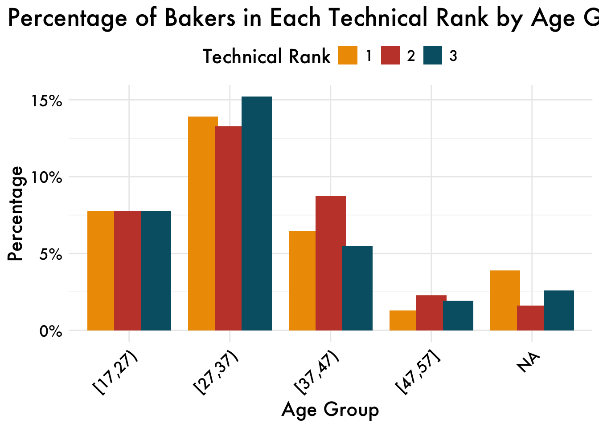
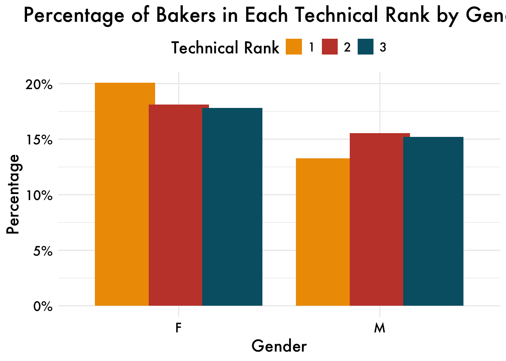
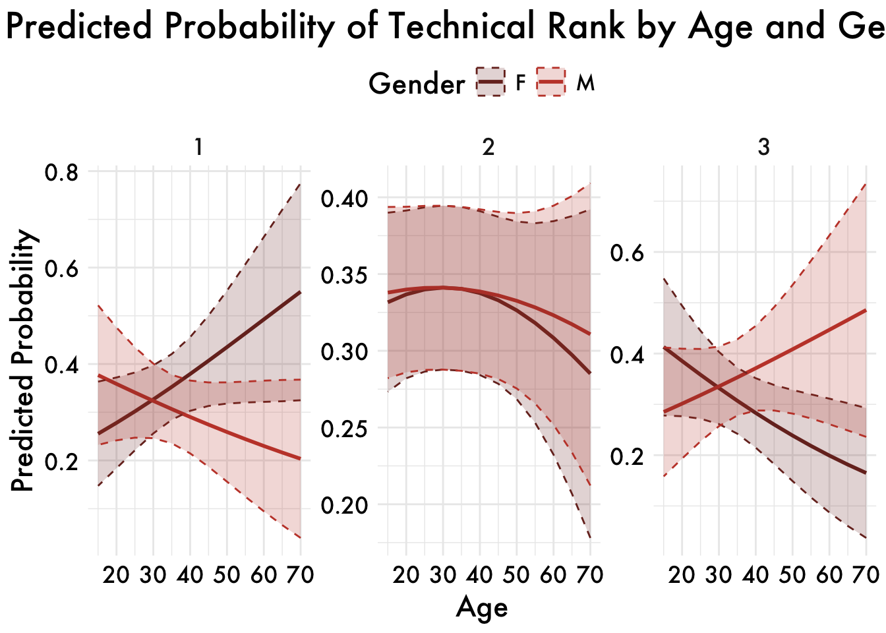
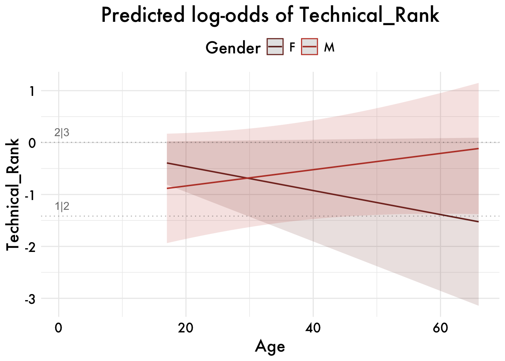
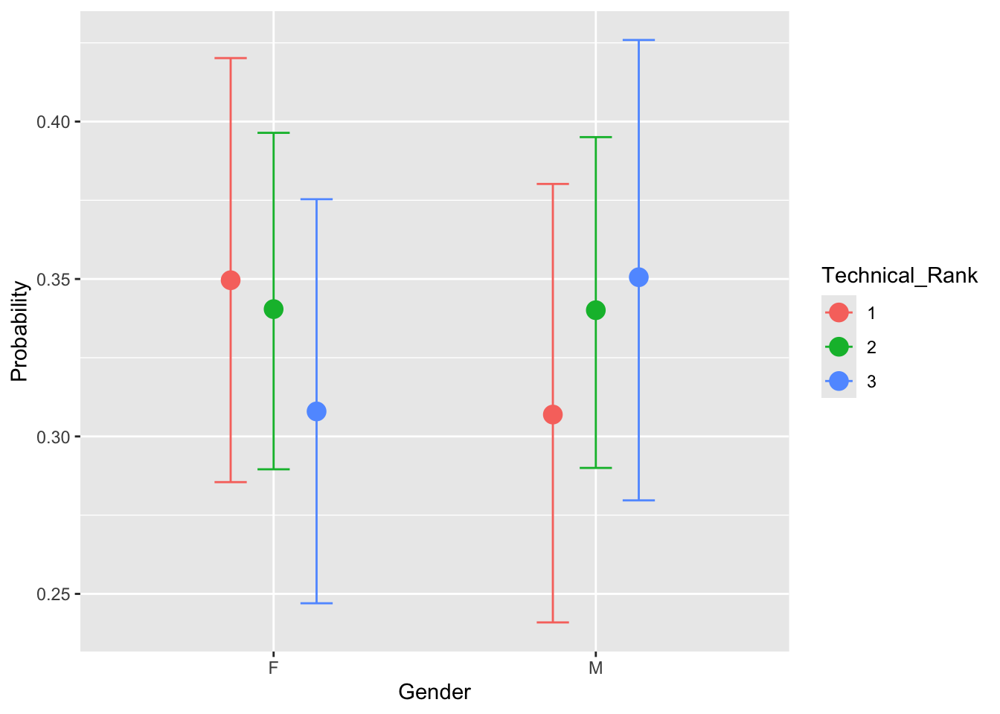
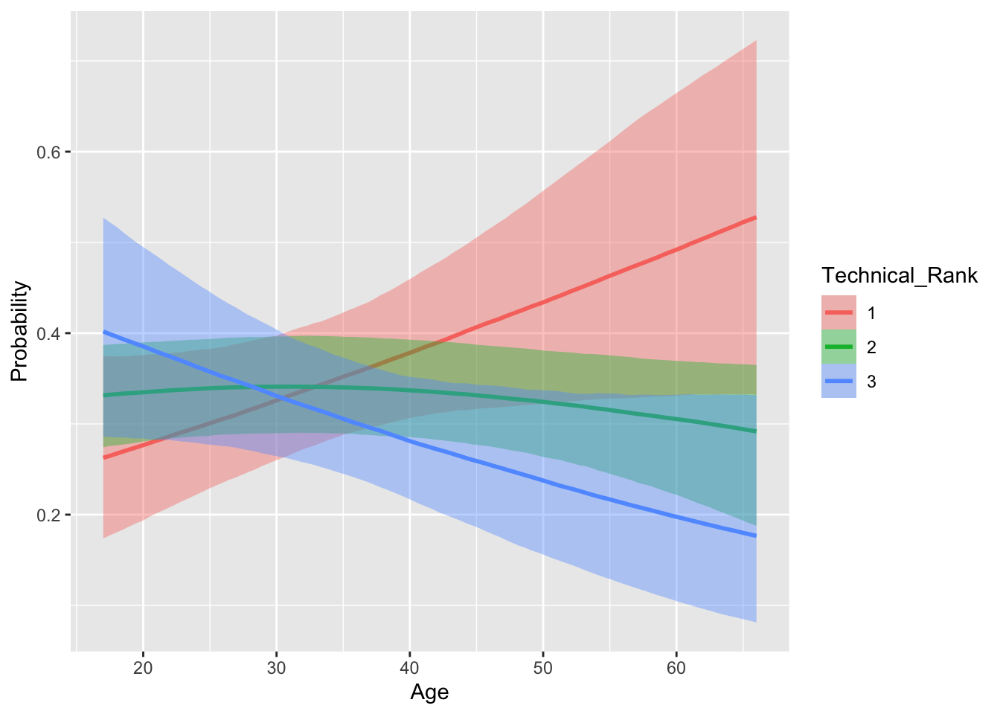
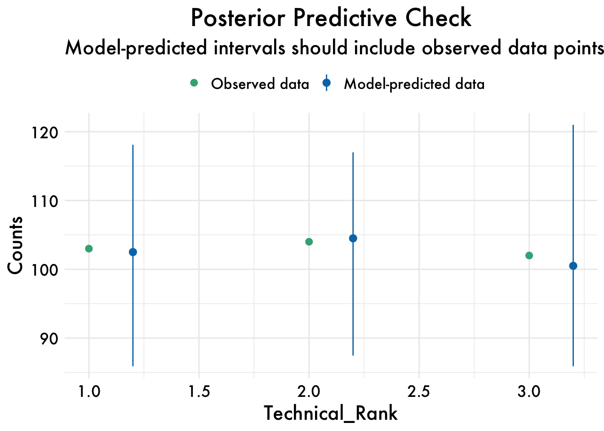

library(pacman)
pacman::p_load(tidyverse, DT, broom, performance,
ordinal,car,ggeffects,gofact,brms,
emmeans,knirt,MASS,brant,
install = TRUE)
#### define plot objects and stuff
palette <- c(
"#772e25", "#c44536", "#ee9b00", "#197278", "#283d3b",
"#9CC5A1", "#6195C6", "#ADA7C9", "#4D4861", "grey50",
"#d4a373", "#8a5a44", "#4a6a74", "#5c80a8", "#a9c5a0",
"#7b9b8e", "#e1b16a", "#a69b7c", "#9d94c4", "#665c54"
)
palette_condition = c("#ee9b00", "#c44536","#005f73", "#283d3b", "#9CC5A1", "#6195C6", "#ADA7C9", "#4D4861")
plot_aes = theme_minimal() +
theme(
legend.position = "top",
legend.text = element_text(size = 12),
text = element_text(size = 16, family = "Futura Medium"),
axis.text = element_text(color = "black"),
axis.ticks.y = element_blank(),
plot.title = element_text(size = 20, hjust = 0.5) # Adjusted title size and centering
)Lab 3- Ordinal Regression
Instructions
If you are fitting a model, display the model output in a neatly formatted table. (The
tidyandkablefunctions can help!)If you are creating a plot, use clear labels for all axes, titles, etc.
If you are using Github, don’t forget to commit and push your work to to it regularly, at least after each exercise. Write short and informative commit messages. Else, if you are submitting on Canvas, make sure that the version you submit is the latest, and that it runs/knits without any errors.
When you’re done, we should be able to knit the final version of the QMD in your GitHub as a HTML.
Lab
The data for this week’s lab is taken from the Great British Bake-off (GBBO, https://bakeoff.netlify.app/). In this lab you will be looking at Gender and Age as a predictor of technical rank. For this exercise, we will only be looking at those who were in top 3 of technical.
In the GBBO, the bakers are usually provided with a list of ingredients and basic instructions, but they may not have access to specific measurements or details on how to prepare the ingredients. The judges evaluate the bakers’ finished products based on factors such as appearance, texture, and flavor, but also compare the bakers’ results to a standard version of the recipe that has been prepared in advance by the judges or a baking expert.
The dataset contains 3 variables:
Gender: M = MALE, F = FEMALEAge: Age of bakerTechnical Rank: Rank in technical (1,2,3)
Load packages:
Load data
- Make sure only the top 3 ranks are being used. For some reason, there are missing ranks (my guess is they did not announce rank on TV)
gbbo <- read_csv("https://raw.githubusercontent.com/suyoghc/PSY-504_Spring-2025/refs/heads/main/Ordinal%20Regression/data/GBBO.csv")
# Enter code to filter. Think about the data type that would be relevant for Rank
# gb <- ....
### only use the the first three ranks
data = gbbo |>
rename(Technical_Rank = `Technical Rank`) |>
filter(Technical_Rank < 4) |>
mutate(Technical_Rank = factor(Technical_Rank, levels = c(1, 2, 3), ordered = TRUE),
Gender = factor(Gender)) Explore
- Plot two figures showing the percentage of bakers in each rank— create one for
GenderandAge
gb <- data %>%
mutate(AgeGroup = cut(Age,
breaks = seq(floor(min(Age, na.rm = TRUE)), ceiling(max(Age, na.rm = TRUE)), by = 10),
include.lowest = TRUE, right = FALSE))
# Compute percentages by Age Group
age_rank <- gb %>%
group_by(AgeGroup, `Technical_Rank`) %>%
summarise(n = n(), .groups = 'drop') %>%
mutate(perc = n / sum(n) * 100)
# Compute percentages by Gender
gender_rank <- gb %>%
group_by(Gender, `Technical_Rank`) %>%
summarise(n = n(), .groups = 'drop') %>%
mutate(perc = n / sum(n) * 100)
# Plot for Age Group
ggplot(age_rank, aes(x = AgeGroup, y = perc, fill = factor(`Technical_Rank`))) +
geom_bar(stat = "identity", position = position_dodge(width = 0.8)) +
scale_y_continuous(labels = scales::percent_format(scale = 1)) +
scale_fill_manual(values = palette_condition) +
labs(title = "Percentage of Bakers in Each Technical Rank by Age Group",
x = "Age Group",
y = "Percentage",
fill = "Technical Rank") +
plot_aes +
theme(axis.text.x = element_text(angle = 45, hjust = 1))
# Plot for Gender
ggplot(gender_rank, aes(x = Gender, y = perc, fill = factor(`Technical_Rank`))) +
geom_bar(stat = "identity", position = position_dodge(width = 0.8)) +
scale_y_continuous(labels = scales::percent_format(scale = 1)) +
scale_fill_manual(values = palette_condition) +
labs(title = "Percentage of Bakers in Each Technical Rank by Gender",
x = "Gender",
y = "Percentage",
fill = "Technical Rank") +
plot_aes 
Ordinal Analysis
- If you haven’t already, convert the outcome variable to an ordered factor. What does the order here represent?
data = gbbo |>
rename(Technical_Rank = `Technical Rank`) |>
filter(Technical_Rank < 4) |>
mutate(Technical_Rank = factor(Technical_Rank, levels = c(1, 2, 3), ordered = TRUE),
Gender = factor(Gender))
The order represents their placement in a technical bake-off.
- Convert input variables to categorical factors as appropriate.
# Factorizing gender
Gender = factor(Gender)- Run a ordinal logistic regression model against all relevant input variables. Interpret the effects for
Gender,AgeandGender*Age(even if they are non-significant).
# Fit the ordinal logistic regression model
model <- clm(`Technical_Rank` ~ Gender * Age, data = gb)
# Extract results with 95% confidence intervals
results <- tidy(model, conf.int = TRUE) %>%
rename(Estimate = estimate, `Lower CI` = conf.low, `Upper CI` = conf.high) %>%
mutate(
Estimate = round(Estimate, 3),
`Lower CI` = round(`Lower CI`, 3),
`Upper CI` = round(`Upper CI`, 3),
p.value = round(2 * (1 - pnorm(abs(statistic))), 3) # Compute p-values manually and round
)
# Display results in an interactive DT table
datatable(results,
options = list(pageLength = 5, scrollX = TRUE),
caption = "Ordinal Logistic Regression Results with 95% Confidence Intervals")summary(model)formula: Technical_Rank ~ Gender * Age
data: gb
link threshold nobs logLik AIC niter max.grad cond.H
logit flexible 309 -336.64 683.28 3(0) 4.04e-08 1.1e+05
Coefficients:
Estimate Std. Error z value Pr(>|z|)
GenderM -1.14947 0.67290 -1.708 0.0876 .
Age -0.02311 0.01246 -1.855 0.0636 .
GenderM:Age 0.03879 0.01853 2.093 0.0363 *
---
Signif. codes: 0 '***' 0.001 '**' 0.01 '*' 0.05 '.' 0.1 ' ' 1
Threshold coefficients:
Estimate Std. Error z value
1|2 -1.416692 0.459602 -3.082
2|3 0.004944 0.452043 0.011- Test if the interaction is warranted
#Hint: You need to create two models with clm(); one with interaction and one without. #Then you compare them using the anova test using anova()
::: {.cell}
```{.r .cell-code}
model_interaction <- clm(`Technical_Rank` ~ Gender * Age, data = gb)
# Fit the model without the interaction term
model_main <- clm(`Technical_Rank` ~ Gender + Age, data = gb)
# Compare the two models using ANOVA
anova_results <- anova(model_main, model_interaction)
anova_results
```
::: {.cell-output .cell-output-stdout}
```
Likelihood ratio tests of cumulative link models:
formula: link: threshold:
model_main Technical_Rank ~ Gender + Age logit flexible
model_interaction Technical_Rank ~ Gender * Age logit flexible
no.par AIC logLik LR.stat df Pr(>Chisq)
model_main 4 685.72 -338.86
model_interaction 5 683.28 -336.64 4.437 1 0.03517 *
---
Signif. codes: 0 '***' 0.001 '**' 0.01 '*' 0.05 '.' 0.1 ' ' 1
```
:::
:::we should use the interaction term since th emodel has significantly better fit
- Use
ggemmeansto create a figure showing the interaction betweenGenderandAgeas a function of rank. Plot predicted probabilities from the model.
preds <- ggemmeans(model_interaction, terms = c("Age", "Gender"), type = "fixed")
ggplot(preds, aes(x = x, y = predicted, color = group, fill = group)) +
geom_line(size = 1) +
geom_ribbon(aes(ymin = conf.low, ymax = conf.high), alpha = 0.2, linetype = "dashed") +
facet_wrap(~response.level, scales = "free_y") +
labs(title = "Predicted Probability of Technical Rank by Age and Gender",
x = "Age",
y = "Predicted Probability",
color = "Gender",
fill = "Gender") +
scale_color_manual(values = palette) +
scale_fill_manual(values = palette) +
plot_aes
Latent Visualization
ols_clm = MASS::polr(Technical_Rank~Gender*Age, data=gb)
ggeffect(ols_clm, c("Age[all]", "Gender"), latent=TRUE) %>% plot() + scale_color_manual(values = palette) +
scale_fill_manual(values = palette) + plot_aes 
- Use the Brant test to support or reject the hypothesis that the proportional odds assumption holds for your simplified model.
brant(ols_clm)--------------------------------------------
Test for X2 df probability
--------------------------------------------
Omnibus 1.29 3 0.73
GenderM 0.58 1 0.44
Age 0.06 1 0.8
GenderM:Age 0.92 1 0.34
--------------------------------------------
H0: Parallel Regression Assumption holdsWe fail to rejecet it proportional odds assumption holds
brms
- Below is a model implementation using the
brmspackage. We will just use the default priors for this. The exercise is to run this code and note your observations. What are salient differences you observe in how the model fitting takes place With respect to the results, how do you compare the results of the model you fit withclmand the one you fit withbrms?
model_path <- file.path("/Users/sm9518/Library/CloudStorage/GoogleDrive-sm9518@princeton.edu/My Drive/Classes/PSY-504/stevens-blog/posts/Lab-3/models/brms_model.rds")
if (!file.exists(model_path)) {
# If the RDS file does not exist, create the model
ols2_brm <- brm(Technical_Rank ~ Gender * Age, data = gb,
family = cumulative, cores = 4, chains = 4)
# Save the model output to an RDS file
saveRDS(ols2_brm, model_path)
} else {
# If the RDS file already exists, load the data from it
ols2_brm <- readRDS(model_path)
}The results are the same since we are using an uninformative prior and the estimates are similar to that of ML (frequentist estimations)
- The
conditional_effectsfunction is used to plot predicted probabilities by Gender and Age across each rank.
conditional_effects(ols2_brm, categorical = T)

check_predictionsfrom theeasystatsperformancepackage is used for examining model fit (i.e., does the data fit the model being used?).
Run the below code. What do you think?
check_predictions(ols2_brm) |> plot() + plot_aes
Yes, the model appears to fit the data